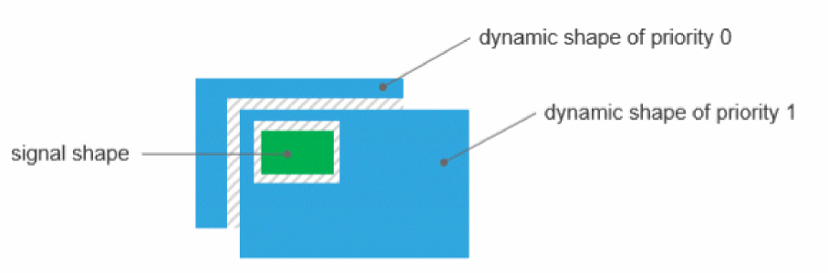

Dynamic Shape Priority
Dynamic shapes have a priority attribute that determines the order in which the overlapping dynamic shapes are voided.
The dynamic shape priority is associated with each dynamic shape for a given metal layer in a given layout. A dynamic shape with a higher priority is cut out from the dynamic shape with a lower priority.
The following figure represents a simple overlap scenario where a dynamic shape is being overlapped by a signal shape and the shape, in turn, overlaps another dynamic shape of lower shape priority.

To insulate the overlapping dynamic shapes, void shapes are created. These void shapes:
- Insulate the dynamic shapes from all the overlapping signal shapes.
- Insulate a dynamic shape from all the overlapping dynamic shapes that have higher priorities.
Related Topics
Package Constraints Supported by the Void Generator
Convert Selected Dynamic Shapes
Return to top